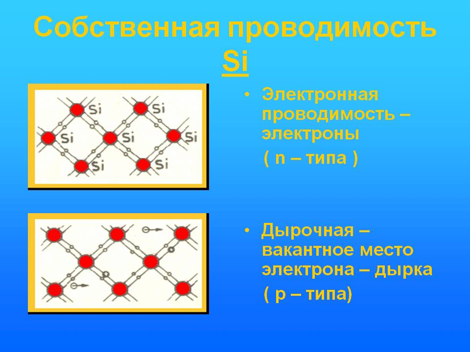

Лекции
Лекция 2
Электропроводность полупроводников.
-
Физическая сущность электропроводности.
Полупроводники представляют собой вещества, которые по удельной электрической проводимости занимают среднее положение между проводниками и диэлектриками. ( кремний, германий, арсенид галия и т.д)
Электрические свойства полупроводников зависят от окружающей среды. При возрастании температуры сопративление полупроводников уменьшается. Кроме того, электрические сопротивление полупроводников очень сильно зависит от количество примесей, от воздействия света, э.п и д.р.
Основные положения электропроводности. Атом состоит из ядра, окруженного облаком электронов.Электроны находятся в движении на некотором расстоянии от ядра в пределах слоев, определяемых их энергии. Чем дальше находится электрон, тем выше его энергетический уровень. Свободные атомы имеют дискретный энергетический спектр.При переходе электрона с одного разрешенного уровня на другой , более отдаленный, происходит поглащение энергии, а при обратном переходе – выделение энергии.

Если рассматривать структуру атомов различных элементов, то можно выделить оболочки, которые полностью застроены электронами и незаполненные оболочки. Последние слабее связаны с ядром легче вступают во взаимодействие с другими атомами.поэтому электроны распаложенные на внешней недостроенной оболочке называют валентными. -
Энергетические уровни.
Совокупность уровней, на каждом из которых могут находиться электроны, называют разрешенной зоной. Промежуток между разрешенными зонами носят название запрещенных зон.
Разрешенная зона характеризуется тем, что все уровни ее при температуре 0 К заполнены электронами.
Запрещенная зона характеризуется тем, что в ее пределах нет энергетических уровней на которых могли бы находится электроны.
-
Виды электропроводности.
3. 1. Примесная проводимость полупроводников — электрическая проводимость, обусловленная наличием в полупроводнике донорных или акцепторных примесей.
Примесная проводимость, как правило, намного превышает собственную, и поэтому электрические свойства полупроводников определяются типом и количеством введенных в него легирующих примесей.
Собственная проводимость полупроводников обычно невелика, так как число свободных электронов, например, в германии при комнатной температуре порядка 3·10^13 / см3. В то же время число атомов германия в 1 см3 ~ 10^23. Проводимость полупроводников увеличивается с введением примесей, когда наряду с собственной проводимостью возникает дополнительная примесная проводимость.
Примесными центрами могут быть:- атомы или ионы химических элементов, внедренные в решетку полупроводника;
- избыточные атомы или ионы, внедренные в междоузлия решетки;
- различного рода другие дефекты и искажения в кристаллической решетке: пустые узлы, трещины, сдвиги, возникающие при деформациях кристаллов, и др.
Примеси можно разделить на донорные (отдающие) и акцепторные (принимающие).
Рассмотрим механизм электропроводности полупроводника с донорной пятивалентной примесью мышьяка As^(5+), которую вводят в кристалл, например, кремния. Пятивалентный атом мышьяка отдает четыре валентных электрона на образование ковалентных связей, а пятый электрон оказывается незанятым в этих связях.
Энергия отрыва (энергия ионизации) пятого валентного электрона мышьяка в кремнии равна 0,05 эВ = 0,08·10^(-19) Дж, что в 20 раз меньше энергии отрыва электрона от атома кремния. Поэтому уже при комнатной температуре почти все атомы мышьяка теряют один из своих электронов и становятся положительными ионами. Положительные ионы мышьяка не могут захватить электроны соседних атомов, так как все четыре связи у них уже укомплектованы электронами. В этом случае перемещения электронной вакансии — «дырки» не происходит и дырочная проводимость очень мала, то есть практически отсутствует. Небольшая часть собственных атомов полупроводника ионизирована, и часть тока образуется дырками, то есть донорные примеси — это примеси, поставляющие электроны проводимости без возникновения равного количества подвижных дырок. В итоге мы получаем полупроводник с преимущественно электронной проводимостью, называемый полупроводником n-типа.
В случае акцепторной примеси, например, трехвалентного индия In^(3+) атом примеси может дать свои три электрона для осуществления ковалентной связи только с тремя соседними атомами кремния, а одного электрона «недостает». Один из электронов соседних атомов кремния может заполнить эту связь, тогда атом In станет неподвижным отрицательным ионом, а на месте ушедшего от одного из атомов кремния электрона образуется дырка. Акцепторные примеси, захватывая электроны и создавая тем самым подвижные дырки, не увеличивают при этом числа электронов проводимости. Основные носители заряда в полупроводнике с акцепторной примесью — дырки, а неосновные — электроны.
3. 2. Собственная проводимость- проводимость полупроводника, обусловленная электронами, возбуждёнными из валентной зоны в зону проводимости и дырками, образовавшимися в валентной зоне.

Концентрации ni таких (зонных) электронов н дырок равны, и их можно выразить через эфф. плотности состояний в зоне проводимости (Nc)и в валентной зоне (Nv), ширину запрещённой зоны и абс. темп-ру Т. - Разрешенная зона?
- Запрещенная зона?
- Структура атома? Носители заряда?